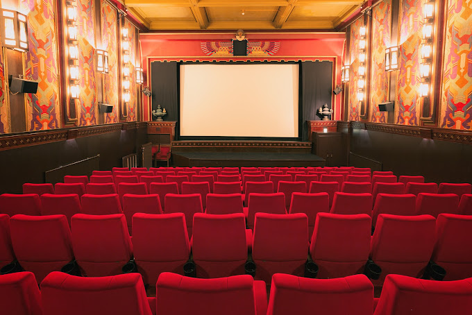
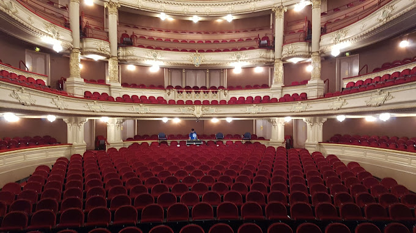

Entretenimiento
El entretenimiento en general en Ámsterdam es excepcional y ofrece una
amplia gama de opciones para todos los gustos. La ciudad se destaca por
su vibrante escena cultural y artística, lo que la convierte en un destino
ideal para los amantes del cine, los teatros y los museos.
Cines
Los cines en Ámsterdam ofrecen una experiencia cinematográfica
de alta calidad y diversidad. Hay una gran variedad de
cines en la ciudad, desde los grandes complejos hasta
los cines independientes y artísticos.
La calidad de proyección y sonido en los cines de Ámsterdam
suele ser excelente, y muchos de ellos cuentan con tecnología
de vanguardia para brindar una experiencia inmersiva al
público
Otro aspecto positivo de los cines en Ámsterdam es la comodidad que ofrecen.
Muchos de ellos cuentan con amplias salas, asientos cómodos y servicios
adicionales como bares y cafeterías, lo que permite disfrutar de una
experiencia completa al ver una película.

Toca aqui o la imagen para ver cines recomendados en Amsterdam
Teatros
Los teatros de Ámsterdam son una parte vibrante y
emocionante de la escena cultural de la ciudad.
Ofrecen una amplia variedad de producciones teatrales,
desde obras contemporáneas hasta musicales y espectáculos
de danza.
La calidad y profesionalismo en los teatros de Ámsterdam
son excepcionales. Muchos de ellos cuentan con talentosos
actores, directores y equipos creativos que ofrecen
actuaciones de alto nivel. Además, la infraestructura
de los teatros es moderna y bien equipada, lo que
contribuye a una experiencia teatral inmersiva.

Toca aqui o la imagen para ver teatros recomendados en Amsterdam
Museos
Los museos en Ámsterdam son verdaderamente impresionantes y
ofrecen una experiencia cultural enriquecedora. La ciudad es
conocida por albergar algunos de los museos más destacados del
mundo.
Además, los museos en Ámsterdam suelen ofrecer una
experiencia interactiva y educativa. Muchos de ellos
cuentan con exposiciones interactivas, guías de audio
y actividades para niños, lo que los convierte en
destinos ideales para visitantes de todas las edades.
Toca aqui o la imagen para ver museos recomendados en Amsterdam